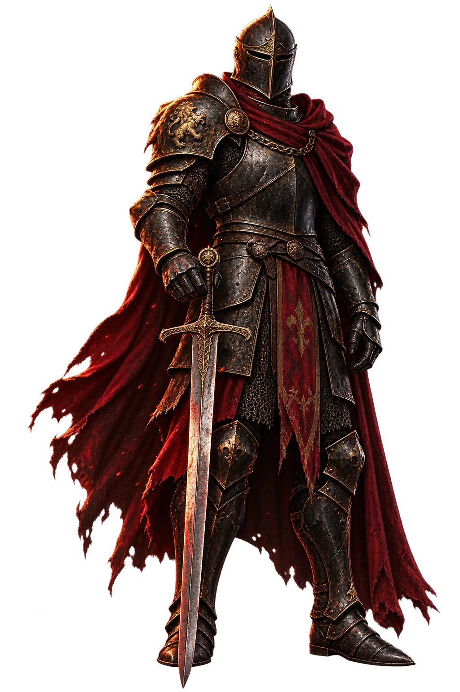
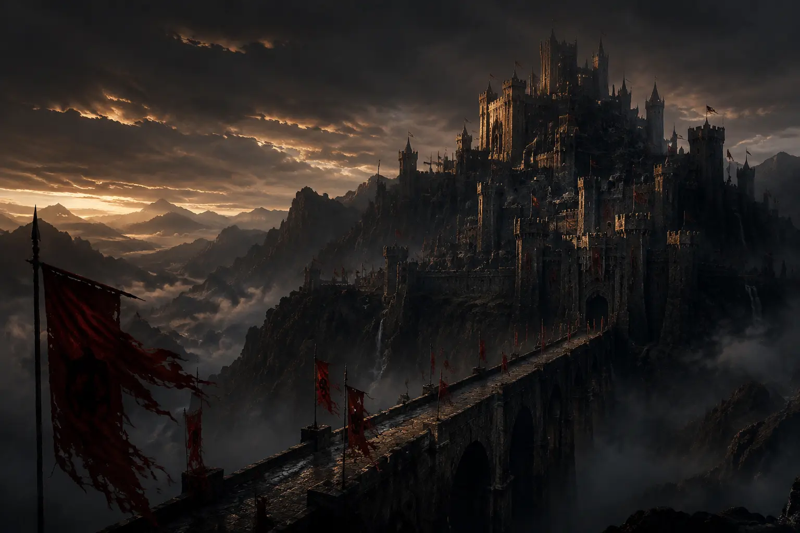
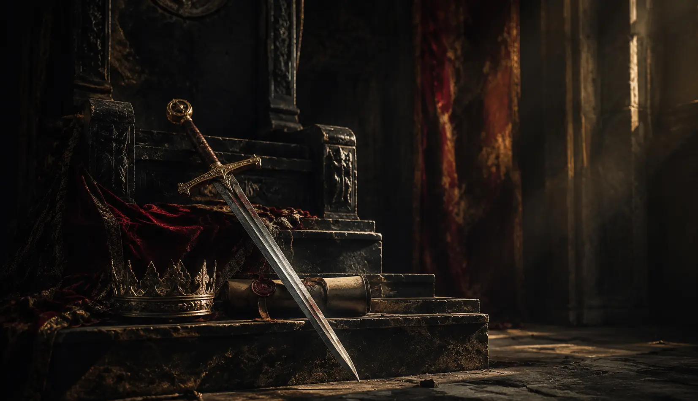

The first law
The soul serves
only its word.
A command ends when the throne falls silent. A promise begins precisely there—when no eye remains to praise the keeping of it.

Honour · Memory · Duty
Before the crown was gold,
it was a promise.
The keeper 713 A.R.
When the bells of Caer Veyl ceased, no army stood at its gate. No enemy had crossed the bridge.
The kingdom had simply forgotten the promise that made it worthy of surviving.
“A realm does not fall when its walls are taken. It falls when its word is worth less than its fear.”The Keeper’s Testament

02 / The realm
A kingdom above the clouds.
Made for the hour after applause ends.
When duty remains, unseen and uncompromising.
The first law
A command ends when the throne falls silent. A promise begins precisely there—when no eye remains to praise the keeping of it.
The second law
Any sword can answer anger. The rarer courage is to hold power without becoming its prisoner, and to leave tomorrow more honourable than today.
The third law
Glory begs to be remembered. Duty asks for nothing. The finest legacy is a world made safer by hands history never learned to applaud.

Steel can be inherited. Gold can be stolen. A title may pass from one uncertain hand to another.
But a promise belongs only to the person willing to keep it when keeping it costs more than breaking it.
Hit the glowing seal before it fades. Ten clean strikes completes the oathkeeper trial.
A clean strike scores one point. Misses break the streak.
06 / The final folio
Will you keep what the crown could not?